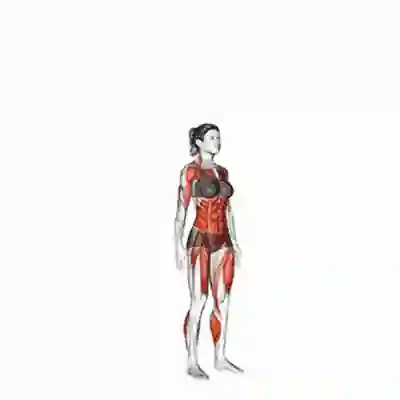

1. Afundo
Trabalha pernas e equilÃbrio.
Treino completo para força, resistência e mobilidade.
Faça 3 rounds. 40 segundos de exercÃcio e 20 segundos de descanso.
Sem equipamento obrigatório. Você pode usar apenas o peso do corpo.
Trabalha pernas e equilÃbrio.

Melhora potência e condicionamento.

ExercÃcio completo para força e resistência.
Fortalece glúteos e pernas.
Aumenta o ritmo cardÃaco e a resistência.
Mais intensidade e explosão.
Completa o treino com foco na estabilidade.